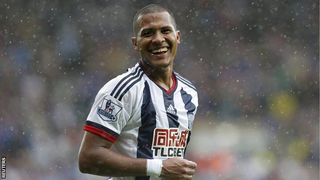

Salomón Rondón: Nuevo jugar del West Bromwich
LONDRES -- El West Bromwich Albion ha hecho oficial hoy el traspaso del delantero internacional venezolano Salomón Rondón por 12 millones de libras (17 millones de euros), el fichaje más caro en la historia del club inglés.
Rondón, de 25 años, llega a los 'baggies' con un contrato de cuatro años, hasta junio de 2019, procedente del Zénit de San Petersburgo ruso.

Premios de la MLB 2015
DALLAS -- Si algo quedó claro durante la temporada 2015 de las Grandes Ligas es que nada está escrito y todos los días hay lugar para héroes y equipos diferentes.
Si alguien hubiera pronosticado que los Vigilantes de Texas, por ejemplo, iban a quedarse a una entrada de avanzar a la Serie de Campeonato de la Liga Americana después de que fueron el último lugar en el 2014, la mayoría hubiera pensado que había locura de por medio.